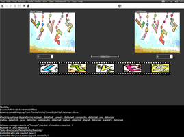
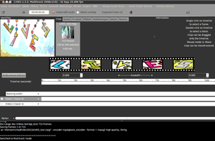

LIVES
Dieser Artikel wurde für die folgenden Ubuntu-Versionen getestet:
Ubuntu 16.04 Xenial Xerus
Ubuntu 14.04 Trusty Tahr
Zum Verständnis dieses Artikels sind folgende Seiten hilfreich:
LiVES  (Linux Video Editing System) ist ein Videoschnittprogramm für Linux, das derzeit angeblich nur in Englisch verfügbar ist. Je nach installierten Sprachpaketen läuft es allerdings durchaus teilweise auf Deutsch.
(Linux Video Editing System) ist ein Videoschnittprogramm für Linux, das derzeit angeblich nur in Englisch verfügbar ist. Je nach installierten Sprachpaketen läuft es allerdings durchaus teilweise auf Deutsch.
Enthalten sind zwei Komponenten:
Video-Editor: man kann Videos schneiden, sie zu einem kompletten Film zusammenstellen und mit diversen Effekten versehen. Es bietet vielfältige Funktionen zum Bearbeiten und Erstellen von Videos.
VJ-Werkzeug: Mischen von Videos in Echtzeit
Als wesentliche Merkmale werden angegeben:
Stabilität
für diverse GNU/Linux-Distributionen verfügbar
individuell konfigurier- und anpassbar
einfach zu bedienen, aber professionelle Möglichkeiten
mithilfe des OSC-Protokolls fernbedienbar
100% freie Software
verarbeitet via MPlayer nahezu alle Formate
Frame-genaue Schnittmöglichkeit
Streaming-Möglichkeit
schlägt bestgeeignetes Format zum Speichern vor
Veränderung der Bildfrequenz möglich
kann Audio direkt aufzeichnen und bearbeiten
enthält zahlreiche Effekte
Weitere Details der Möglichkeiten des Programms finden sich unter Features .
Installation¶
Das Programm ist in den offiziellen Paketquellen enthalten. Es muss folgendes Paket installiert werden [1]:
lives (universe)
 mit apturl
mit apturl
Paketliste zum Kopieren:
sudo apt-get install lives
sudo aptitude install lives
Bei Installation über das Software-Center können folgende Komponenten gleich mit installiert werden:
dvgrab holt Videodateien über IEEE1394 oder USB-Anschluss
libdv-bin für Videos im DV-Format
mencoder MPlayer's Movie Encoder
mjpegtool für das MPEG-Format
Benutzung¶
Beim ersten Programmstart [2] mit dem Befehl lives oder über den Eintrag im Anwendungs-Menü "Multimedia -> LIVES" kann man das Arbeitsverzeichnis angeben. Ein Assistent prüft, ob alle erforderlichen Komponenten installiert sind. Es stehen zwei Arbeitsmodi zur Verfügung:
"Clip Edit mode" - für einfachere Bearbeitungen sowie zum Mischen von Videos
"Multitrack mode" - für aufwendigere Arbeiten mit mehr als einem Clip
|  |
| Ansicht Clip Editor |
|  |
| Ansicht Multitrack |
Unter "Preferences"/"Werkzeuge -> Einstellungen" oder unter "Edit"/"Bearbeiten" kann diese Auswahl jederzeit nachträglich geändert werden.
Das Programm besteht aus:
Menüleiste
Symbolleiste
Video in separatem Fenster abspielen
übliche Videoabspielfunktionen einschließlich Endlosschleife
Ausschalten der Tonspur
Fenster "First Frame" zum Anzeigen des ersten
Fenster "Last Frame" zum Anzeigen des letzten Einzelbildes
darunter jeweils der Einzelbildzähler
LIVES Filmsymbol
Zeitleiste der eingeladenen Videodatei aufgeteilt in Video- und Tonspuren
Erste Schritte¶
Unter "File -> Open File"/" Datei -> Öffne Datei/Verzeichnis" lädt man sich eine zu bearbeitende Videodatei ein. Das "Dateiauswahl-Fenster" bietet die Möglichkeit, die Videodatei im "Preview"/"Vorschau" vorab anzuschauen. Beim Einladen wird die Datei automatisch in ihre Einzelbilder zerlegt und temporär auf der Festplatte gespeichert, was je nach Format eine Weile dauern kann. Anschließend erscheint links unter "First Frame"/"Erstes Bild" das erste und unter "Last Frame"/"Letztes Bild" das letzte Einzelbild.
Eine Auswahl "Selection" kann man schnell mit der Maus durch Ziehen auf der Zeitleiste oder genau mit den Bildzählern rechts und links erzeugen. Zum Exportieren "Datei -> Codiere Auswahl als" der Bearbeitung bleiben - sofern man keine Filter gewählt hat - standardmäßig Grösse und Seitenverhältnis unverändert, die Anzahl der Bilder / Sekunde kann noch geändert werden. Voreingestellt ist "Multi_encoder", Format für Video "hi-theora" und für Ton "vorbis". Ggf. passt LIVES Details der Videoauflösung den gewählten Formaten bzw Codecs etwas an.
Hat man mehrere Clips im "Multitrack Mode" geladen, werden diese nicht automatisch in die Zeitleiste geladen, sondern unter "Clips" angezeigt, so dass man sie nach Wunsch positionieren kann auf "Video1" oder "Video2". Dann können auch Effekte hinzugefügt werden.
Falls man mehr wissen möchte, steht unter "Hilfe -> Handbuch" ein brauchbares Online-Handbuch zur Verfügung.
Problembehebung¶
Falls die Voreinstellungen es nicht erlauben, zu exportieren, sollte es mit folgenden Einstellungen gelingen:
mjpegtools_encodermpeg2für Videomp2für Ton
Links¶
How to Install LiVEs video editor 2.4.2 via PPA
- Blogbeitrag, 09/2015Videobearbeitung
 Übersichtsartikel
Übersichtsartikel
- Erstellt mit Inyoka
-
 2004 – 2017 ubuntuusers.de • Einige Rechte vorbehalten
2004 – 2017 ubuntuusers.de • Einige Rechte vorbehalten
Lizenz • Kontakt • Datenschutz • Impressum • Serverstatus -
Serverhousing gespendet von